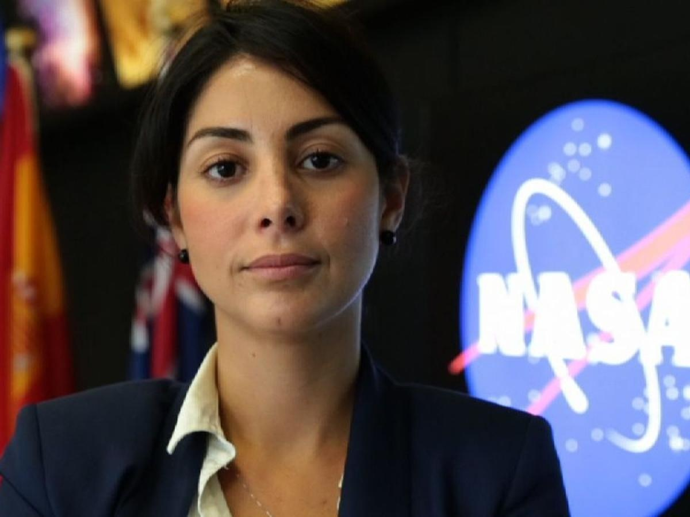

Trabajo de Enric Fernando Negrete Cueva

Diana Trujillo nació el 4 de enero de 1981 en Cali, Colombia. Desde que era una niña mostró cierta curiosidad por las ciencias sobre todo las matemáticas. Con tan solo 17 años emigró a los Estados Unidos con tan solo 300 dólares y con un bajo nivel de ingés, en busca del sueño americano. Una vez allí trabajó en empleos como limpieza de casas mientras estudiaba el idioma. Tiempo después logró entrar en la Universidad de Florida y más tarde a la Universidad de Maryland donde se graduó en ingenieria aeroespacial en 2007
Diana Trujillo comenzó su carrera en la NASA alrededor de 2007 y 2008. a lo largo de su carrera ocupó varios puestos importantes:
| 🌍 | 🚀 | 👩🔬 | 🌍 | 🏅 | 👩🚀 | 🌌 | ⭐ |
|---|---|---|---|---|---|---|---|
| Primera transmisión de la NASA en español en un aterrizaje en Marte (Perseverance, 2021) | Participación clave en dos de las misiones más importantes a Marte: Curiosity y Perseverance | Ha desarrollado estudios sobre cómo activar la telomerasa para combatir enfermedades | Nombrada una de las 20 latinas más influyentes en tecnología (2014) | Premio Bruce Murray Award por educación y divulgación científica | Condecoraciones en Colombia como la Cruz de Boyacá y la Orden Policarpa Salavarrieta | Directora de vuelo en la NASA, uno de los cargos más importantes en control de misiones | Inspiración para jóvenes, especialmente mujeres latinas, en carreras STEM |